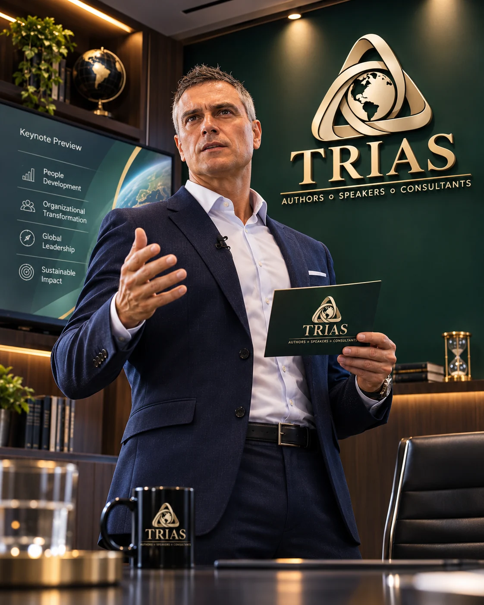
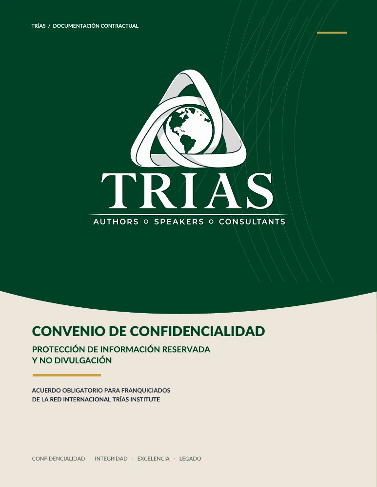

Formulario de Aplicación a Franquicia TRIAS
El primer paso para presentar tu candidatura.
Descargar formulario Visualizar PDFTrias Institute es la organización internacional fundada por Juan Renedo para ayudar a profesionales experimentados a convertirse en referentes reconocidos mediante una metodología integral probada: Autor, Disertante y Consultor.

La mayoría de los profesionales acumulan 10, 20 o 30 años de conocimientos, pero no siempre saben cómo convertirlos en una propuesta de valor de alto impacto y escala global.
No importa si eres empresario, médico, abogado, ingeniero, psicólogo o directivo. Si tienes experiencia, nuestro sistema te prepara para dominar las tres facetas de máximo impacto.
01 / COMPARTE TU VOZ
Inspira. Motiva. Trasciende. Aprende a comunicar tus conocimientos con maestría escénica, conectar con audiencias multitudinarias y construir una carrera cotizada como orador magistral.
02 / ESCRIBE TU LEGADO
Escribe tu legado. Lidera con ideas que perduran. Transforma tus conocimientos en libros insignia, metodologías registradas y propiedad intelectual con autoridad indiscutible.
03 / TRANSFORMA ORGANIZACIONES
Experto. Estratégico. Esencial. Convierte tu bagaje en servicios de consultoría y mentoría de alto valor para empresas, organizaciones y líderes que demandan tu experiencia.
Cuando estas tres dimensiones trabajan juntas, el profesional multiplica su alcance, su reputación y sus ingresos de forma exponencial.
Convertir el conocimiento y los aprendizajes de años en conferencias magistrales capaces de cautivar audiencias e inspirar cambios reales.
Plasmar tu experiencia en libros y contenidos de referencia que viajan por el mundo y te otorgan el estatus de máxima autoridad.
Empaquetar soluciones concretas en programas de consultoría y mentoría por las que empresas e instituciones pagan sumas considerables.
Nuestro sistema integra 6 herramientas de desarrollo continuo:
Contenido estructurado, práctico, modular y aplicable desde el primer día.
Práctica intensiva, simulaciones y perfeccionamiento de habilidades clave.
Acompañamiento para potenciar fortalezas y definir objetivos claros de carrera.
Orientación directa de expertos con experiencia comprobada en el mercado.
Marcos y procesos para convertir conocimiento en activos de valor comercial.
Red internacional de profesionales que generan alianzas y oportunidades conjuntas.
Más de 900 temas de capacitación para transformar tu experiencia en nuevas posibilidades.
Explora una selección por área o consulta el catálogo completo en nuestros dosieres.
Conoce los documentos que acompañan tu proceso de incorporación a TRIAS.
El primer paso para presentar tu candidatura.
Descargar formulario Visualizar PDFFormaliza tu interés en formar parte de la red.
Descargar carta Visualizar PDF
Protección de información y compromiso de confidencialidad.
Descargar convenio Visualizar PDFExplora 900 seminarios para la red de franquicias TRIAS.
Descargar catálogo Visualizar PDFResponde 3 preguntas estratégicas y nuestro algoritmo te recomendará el programa óptimo para monetizar tu experiencia.
Tu perfil y nivel de experiencia están listos para la dimensión completa de Trias. Desarrollarás de forma coordinada tu carrera como Conferencista, tu primer Libro y tu metodología de Consultoría de Alto Valor.
A partir de su dilatada trayectoria en formación y acompañamiento profesional a nivel internacional, Juan Renedo creó el concepto Trias como una metodología rigurosa basada en la integración de tres dimensiones: Hablar, Escribir y Asesorar.
Trias Institute nace para hacer posible ese proceso de manera estructurada, profesional y escalable, eliminando el ensayo y error para profesionales de alto nivel.
Descubre cómo especialistas de diversas ramas escalaron su impacto con el Método Trias.
Médico Especialista & Conferencista
Abogada Corporativa & Autora
Director Trias São Paulo
Todo lo que necesitas saber antes de iniciar tu proceso en Trias Institute.
No. El sistema de Trias Institute está diseñado específicamente para acompañar al profesional desde su experiencia inicial en su propio sector hasta la construcción de sus conferencias, libros y servicios de consultoría, paso a paso y con metodología probada.
A todas las áreas donde exista conocimiento acumulado: empresarios, ejecutivos, médicos, abogados, ingenieros, psicólogos, educadores, deportistas y especialistas. Si tienes experiencia y algo valioso que aportar, Trias te ayuda a monetizarlo.
Contamos con formatos híbridos y virtuales de alto nivel internacional, complementados con encuentros de networking, talleres intensivos y masterclasses presenciales en nuestras ciudades sede.
El representante obtiene la exclusividad territorial para desarrollar formaciones, seminarios, eventos y certificaciones de Trias Institute en su ciudad o país, con respaldo de marca, metodología, formación de formadores y acompañamiento central.
¿Tienes una historia que contar? ¿Un método que enseñar? ¿Un libro que escribir? ¿Una conferencia que compartir? Da el paso hoy mismo.
Completa el formulario y un asesor senior coordinará tu entrevista de perfil.
Abre una sede de Trias Institute en tu ciudad y lidera el mercado del conocimiento.